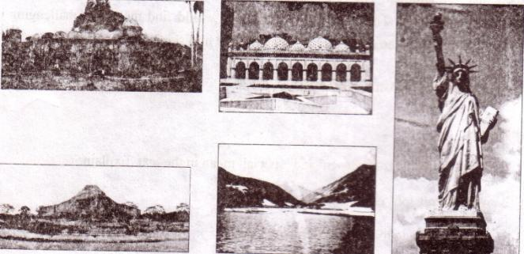
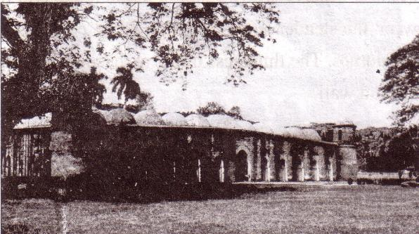
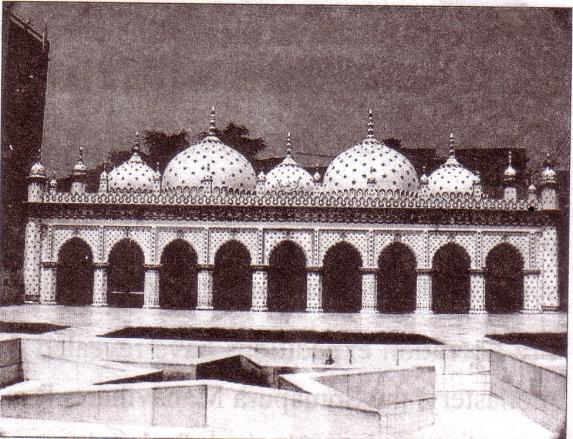
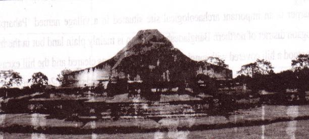
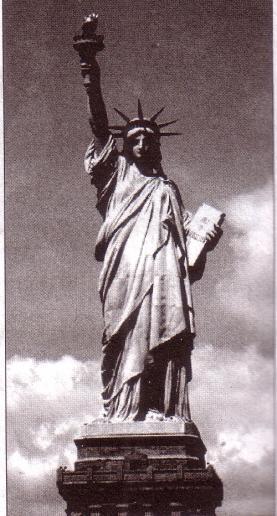
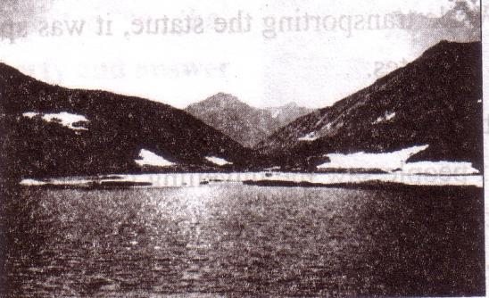

Unit Eight
World heritage

After we have studied this unit, we will be able to
-
listen for specific information:
-
read and understand texts through silent reading.
-
ask and answer questions .
-
describe a place
Lesson 1: The Shat Gambuj Mosque
-
A. Look at the picture. Work in pairs. Talk about the picture and ask and answer the following questions.
1. What is this building?
2. Do you have a building like this in your town/village?
3. What do we call it?
4. What is it for?

B . Read the text and complete the chart.
‘Heritage’ is what we inherit from the past, live with them in the present and then pass on to our children or future generation. Our unique source of life and inspiration is our cultural and natural heritage. When we speak of `World Heritage', it indicates places and sites that we got from the past and pass on to the future generation of the entire world.
The `Shat Gambuj Mosque' in Bagerhat is such a heritage. It became a UNESCO World Heritage Site in 1985.
Originally, the historic Mosque City was known as ` Khalifatabad'. It is situated at the outskirts of Bagerhat town--- not very far from the dense mangrove forest of the Sundarbans. Khalifatabad was a Muslim colony. It was founded by the Turkish general, a saint warrior Ulugh Khan Jahan in the 15th century. The infrastructure of the city reveals significant technical skills in many mosques as well as early Islamic monuments. Baked bricks were used for the construction of the buildings. The planning of the city was distinctly dominated by Islamic architecture and the decorations were a combination of Mughal and Turkish architecture.
Khan Jahan built a network of roads, bridges, public buildings and reservoirs to make the city habitable. There were about 360 mosques in the city. Among them the most remarkable is the multi-domed Shat Gombuj Mosque.
102The mosque is unique in the sense that it has 60 pillars that support the roof, with 77 low height domes. The 4 towers at 4 comers have smaller domes on the roof as well. The vast prayer hall has 11 arched doorways on the east and 7 each on the north and south for light and ventilation. It has 7 aisles running along the length of the mosque and 11deep curves between the slender stone columns. These columns support the curving arches created by the domes. The thickness of the arches is 6 feet and have slightly narrowing hollow and round wall.
The west wall in the interior has 11 ‘mihrabs’ (niche in mosque pointing towards Mskkah). These mihrabs are decorated with stonework and terracotta. The floor of the mosque is made of brick.
Besides being used as a prayer hall, Khan Jahan used the mosque as his court also. Today, it is one of the greatest tourist attractions and one of the best architectural beauties of Bangladesh.
|
Shat Gambuj Mosque |
Information |
|
Founded by |
- |
|
When |
- |
|
Number of domes |
- |
|
Number of pillars |
- |
|
Arches |
- |
|
Thickness of the arches |
- |
|
Mihrabs |
- |
B. Look at the picture of the Star Mosque in Dhaka. Read the information and write a description on the Star Mosque with the help of the given clues.
Location- Dhaka, Abul Khairat Road
Style: Mughal Number of domes: 5
Decoration: different sizes of stars on
dome and outside wall
Materials used for decoration: chinaware
and white cement
Interior of the mosque: mosaic floor, floral
tiles on the wall
Built by: Mirza Ghulam Pir- a respectable
Zamindar of Dhaka
Time: early 18th century

Lesson 2: The Somapura Mahavihara
A . Read the text.
Paharpur is an important archaeological site situated in a village named `Paharpur' in Naogaon district of northern Bangladesh. Naogoan is mainly plain land but in the middle of it stood a hill covered with jungle. When the jungle was cleared and the hill excavated, there emerged a lofty ruin of an ancient temple. The temple is about 24 metre high from the surrounding level. `Pahar' means hill. Hence is the name Paharpur.
The Paharpur site has been excavated and re-excavated a number of times by archaeologists. Sir Alexander visited the place in 1879. Cunningham intended to carry out an extensive excavation but was prevented by the land owner. Nevertheless, he was satisfied with whatever excavation he was permitted to carry on. He discovered the ruins of a square tower of 22 feet side with a projection in the middle of each side from the top of the central hill. The site was declared to be protected by the Archaeological Survey of India in 1919 under the Ancient Monuments Preservation Act of 1904.
104Systematic and regular excavation started jointly by Archaeological Survey of India, and Varendra Research Society of Rajshahi and Kolkata ( at that time known as Calcutta) University in 1923. They excavated the south-west corner of the monastery. Next in 1925-26, R D Banerjee excavated the northern part of the central mound. From 1926-27 onward, excavation was carried out under the supervision of KN Dikshit.
The Department of Archaeology of Bangladesh brought the site under further excavation after independence. The operations took place in two phases. The first phase was initiated in 1981-82 and continued to 1984-1985. The second phase was started in 1988-89 and continued to 1990-91.
Pre-liberation expeditions have revealed the architectural remains of a vast Buddhist monastery, the Somapura Mahavihara. It is dominated by the central shrine, attracting immediate attention by its lofty height and unusual architectural design.
Somapura Mahavihara was one of the most famous Buddhist institutions for monks of ancient Bengal and in southern Asia. The excavated complex at Paharpur has been identified with the Somapura Mahavihara built by the second Pala king Dharmapala (781-821 AD). Some clay seals from the ruins bear the inscription Shri-Somapure- Shri-Dharmapaladeva-Mahavihariyarya-bhiksu.szi-sangghasya.

The Pala rulers were devout Buddhists and they founded a number of monasteries throughout their growing empire. Some of them became great centres of learning and their reputation quickly spread throughout Asia. Somapura Mahavihara's close
relationship with the ruling dynasty implied that it shared the political ups and downs of its benefactors.
105-
B. Match the words with their meanings.
| Words Archaeological Excavate Lofty Extensive Systematic Debris devout | Meanings rubbles/wreckage widespread ancient cultural remains, pious uncover something with difficulty Grand done methodically |
A . Read the in A again and choose the correct answer.
1. Paharpur is a
a. typical Bangladeshi village.
b. an extraordinary village.
c. a very small village.
d. a village on top of a mountain.
2. After excavation, the archaeologists discovered a huge
a. king's palace.
b. emperor's courtyard.
c. Buddhist monastery.
d. Hindu temple.
3. How many phases of excavation of ' Paharpur' has been mentioned in the text?
a. four
b. Eve
c. six
d. seven
4. What thing indicates that the site was built by the second Pala king?
a. earthen seals
b. ceramic seals
c. stone sets
d. Ron sets
5 . The word ' benefactors' in the text means
a. banks.
b. famous businessmen.
c. people with money.
d. financial supporters.
106D . Read the text again. Work in pairs. Ask and answer the following questions.
1. Why is the village named Paharpur?
2. Where is it located?
3. What is it famous for?
4. What did Cunningham find when he was digging the Paharpur site?
5. Why was the site officially stated to be preserved?
Now write the answers in your exercise book.
E . Do you have any old or ancient relic in your city/town/village? Write about it with the help of the following questions.
-
When was it established?
-
Who built it?
-
How does it look like?
-
How big is it?
-
What was it for?
-
What is its present condition?
-
Why do you like it?
If you don't have any such relic, surf the internet for a relic in Bangladesh that interests you and write about it with the help of the above questions.
Lesson 3: The Statue of Liberty
A . Look at the picture and talk about it in pairs.
1 Do you know what it is?
2 Discuss what stands out in the picture.
3 Do you think it is a man or a woman?

B . Read the questions first. Now listen to the CD/teacher about the Statue of Liberty and answer the following questions.
|
Listening text 7 |
1. Where is the Statue of Liberty situated?
2. Which country gave the statue as a gift?
3. The gift was meant for which country?
1074. On what occasion was it given?
5. When was the statue given?
6. What does the statue represent?
-
C. Listen to the text again and complete the chart.
|
Statue of Liberty |
Information |
|
Situated |
-- |
|
Artist |
-- |
|
gift from |
-- |
|
reason for the gift |
-- |
|
presented on |
-- |
|
occasion |
-- |
|
the statue symbolizes |
-- |
|
framework made of |
-- |
|
amount of copper used |
-- |
|
Weight |
-- |
|
year of UNESCO World Heritage Site |
-- |
D . Read the text and answer the following questions.
The French Sculptor Frederic Auguste Bartholdi was assigned to design and complete a sculpture within 1876, so that it could be a gift for the Americans on the occasion of celebrating the hundred years of the American Declaration of Independence. The statue was a joint venture between the USA and France. The French people would build the statue and assemble it in the States, and the people of the USA were to build the pedestal for the statue.
Raising money for the pedestal was completed in August 1885. The construction of the pedestal was finished in April 1886. In the meantime, France completed the Statue in July 1884. They sent it to New York on board the French war ship `Isere' in 1885. While transporting the statue, it was split up into 350 individual pieces and packed in 214 crates.
It took four months to put the Statue together and place it on the pedestal. Thousands of people saw the unveiling ceremony of the Statue of Liberty on October 28th 1886. It was centennial gift ten years late.
The Freedom that the Statue stands for is not stationary. The broken chain wrapped around her feet, sticking out from the bottom of her robe, symbolizes her free forward movement, enlightening the world with her torch, free from oppression and slavery.
108The Statue's original torch was the first part constructed in 1876. It was replaced by a new copper torch covered in 24K gold leaf in 1984. The torch is lighted by flood light at night. The original torch is currently located in the lobby of the monument. Access to the torch has been closed since 1916.
From October 28, 2011, on her 125th anniversary, the Statue of Liberty was named Liberty Enlightening the World wide Web". The credit goes to a series of new web cams placed around her torch. Several amazing views will be just a click of a mouse away. On clear days, three cameras provide unobstructed scenes and views. Two cameras provide an ultra-wide-angle interactive view of the famous golden torch. The remaining camera looks downwards towards the crown of The Statue of Liberty, her face, the tablet she is holding from your computer or smart phone. So a person can have access to the web cam's live feed of The Statue of Liberty from anywhere in the world.
Que stions.
1. On what occasion did the French government give the Statue of Liberty to the USA?
2. When did she reach her destination?
3. How was she transported?
4. How has new technology made it possible for people to see the statue from anywhere they are?
5. What do you understand by the expression `enlightening the world'?
Lesson 4: Lake Baikal
-
A. Look at the picture and talk about it.

B . Work in pairs and ask and answer the following questions.
1. What do you think it is?
2. Where is this situated?
3. Are you familiar with something like this?
109C . Read the text to find out if your guess in questions 1 and 2 is right.
Lake Baikal is the deepest and one of the biggest and most ancient lakes of the world. It is situated almost in the centre of Asia. Lake Baikal is a gigantic bowl set 445 meter above sea level. This grand, enormous, unusual and charming miracle of nature is located in the south of Eastern Siberia, in the Buryat Autonomous Republic and region of Irkutsk, Russia.
The lake covers 31,500 sq.km. It is 636 km long and an average of 48 km wide. The widest point of the lake is 79.4 km. The water basin occupies 557,000 sq. km. and contains 23,000 cu.km. (cubic kilometer) of water, which is about one fifth of the world's reserves fresh surface water.
The average water level in the lake is never higher than 456m. The average depth of Lake Baikal is 730 m., and its maximum depth in the middle is 1,620 m. It would take about one year for all the rivers of the world to fill Baikal's basin, and would take four hundred years for all the rivers, streams and brooks now flowing into Siberian lake sea to do the same.
There are hot springs in the surrounding area of Lake Baikal. The quality of the water of these springs is excellent. The lake acts as a powerful generator and bio filter producing this water. Baikal is a stormy lake. Autumn is the most stormy time. The wind blows in various directions.
The weather depends on the wind. If it is blowing from the north, the weather is bright and sunny. The water of the lake looks green and dark blue. But if the winds get stronger, Baikal turns black, waves rising high with white crest. The beauty of Lake Baikal is exceptional.
-
D. Match the words with the meanings.
| Words Miracle basin brook crest exceptional | Meanings small stream top outstanding an act believed to be caused by God bowl-shaped depression filled with water |
-
E. Read the text in C again and complete the chart.
|
Lake Baikal |
Information |
|
Location |
-- |
|
setting/placed |
-- |
|
length |
-- |
|
width |
-- |
|
maximum depth/ |
--- |
|
utmost/highest depth |
-- |
|
extended over an |
-- |
|
area/occupies an area |
--- |
|
amount of water |
--- |
F . Make a list of attractive features of Lake Baikal.
G . Have you seen a lake or river that has attracted you very much? If yes, writ e what aspects of the lake or river appealed to you. If not, go and see a lake or a river. Then write about it.
111